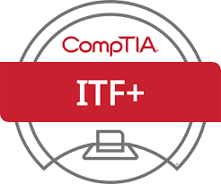
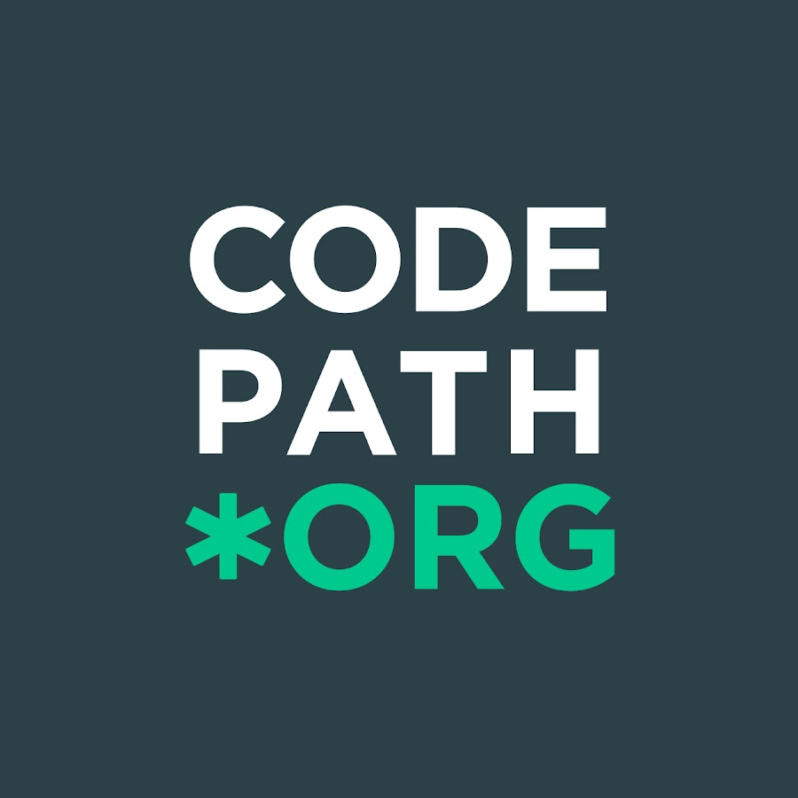

My Education
Schooling
Currently attending University of Scranton: Class of 2026
GPA: 3.7
2024 Dean's List
-
CMPS 134 & 144 - Computer Science I & II:
Trained to use the java programming language to develope programs and other object oriented coding projects -
IT 354 - Computer Networks:
An introduction to intranets and wide-area networking including operating systems fundamentals, administration of networks, security issues, intrusion detection/protection, firewalls. -
CYBR 320 - Digital Forensics Investigations:
A foundation of digital forensic procedures and techniques. This course contained hands on labs and real world senarios that forced critical thinking and use of many cyber security and penetration testing tools/applications.
Certifications & Courses

CompTIA ITF+ Certification
Awarded August 2023

Univ. of Pitt x U.S. Air Force
Cyber Camp
Completed July 2021

Codepath Intermediate Cyber Security Course
Completed November 2024